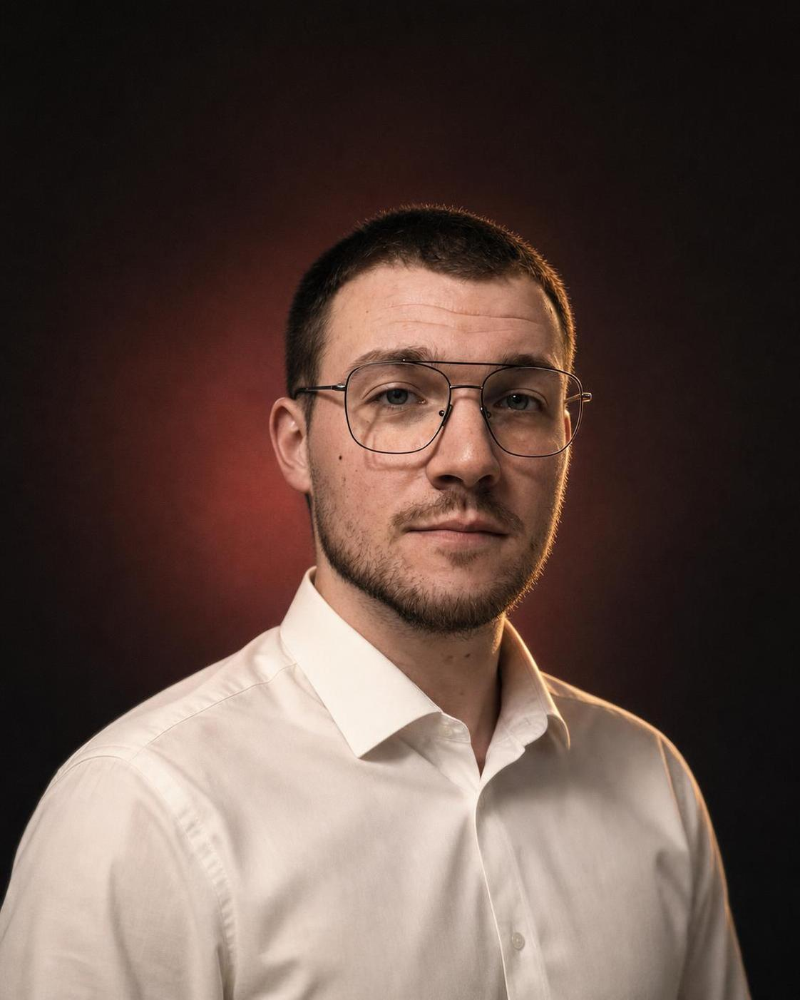

Projektuję dopracowane strony wizytówki dla firm i marek osobistych, które chcą wyróżniać się klasą — a nie tylko obecnością w sieci.
Michał Nikielski — założyciel NikPage
Projekt od zera pod Twoją branżę — typografia, ścieżka klienta, szybkość działania.
Spinam narzędzia, które już masz. Raporty i obieg dokumentów dzieją się same.
Grafiki, obróbka zdjęć i pliki gotowe do druku w jednym języku wizualnym.

Projektuję strony tak, jak projektuje się wnętrza — pod konkretną osobę i jej charakter.
Strony tworzę od ponad dwóch lat. Zaczynałem hobbystycznie, dziś robię to na poważnie. Wcześniej przez trzy lata studiowałem meblarstwo — uczyłem się doboru kolorów i tego, jak dopasować wystrój do człowieka, który będzie w nim żył. To doświadczenie przenoszę dziś na każdy projekt.
Każdą stronę buduję od zera, a szczegóły ustalam z Tobą, zanim powstanie pierwszy szkic. Najwięcej satysfakcji daje mi moment, w którym oboje dokładnie wiemy, jak projekt ma wyglądać. Śledzę aktualne trendy i najlepiej pracuje mi się z ludźmi, którzy wiedzą, czego chcą.
Po godzinach — sport, przede wszystkim piłka nożna, i wszystko, co nowego dzieje się w technologii i designie.
Doświadczenie:
Umów rozmowę bez zobowiązań. Opowiesz mi o firmie, a ja przygotuję konkretną propozycję z ceną i terminem.
Odpowiadam w ciągu 24 godzin